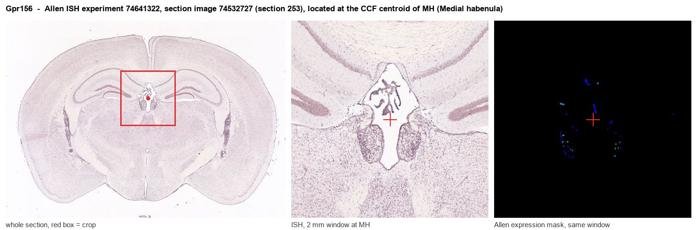

Gpr156
Probable G protein-coupled receptor 156 (GABAB-related G protein-coupled receptor)
Spatial tier: STRICT_EXCLUSIVE · Class: GPCR · Top region: MH (Medial habenula) · Positive regions: 10/554
43.5Discovery Score
40.7Targetability Score
CEvidence grade C
What this means: Gpr156: predicted fine-region profile is strict-exclusive, with 10 positive regions out of 554 (limit 12); direct spatial validation is required.
Function in MH: evidence, prediction, innovation
- Gene function
- GPR156 is an orphan class-C GPCR structurally related to the GABA-B receptor. Unlike most class-C receptors it is constitutively active, signalling through Gi/o without a known ligand, and its activity is controlled largely by how much receptor reaches the membrane. Its best-characterised job is polarising hair cells in the inner ear downstream of EMX2.
- Region function
- The medial habenula is an epithalamic relay whose cholinergic/substance P neurons project almost exclusively through the fasciculus retroflexus to the interpeduncular nucleus. This MHb-IPN axis sets nicotine aversion and withdrawal, fear memory expression, anxiety and negative affect.
- Published in this region
- direct Miller et al. 2025 (PNAS) identified a rare GPR156 variant segregating with depression in a Mennonite pedigree and showed that modelling it in mice causes habenular hyperactivity and heightened stress sensitivity, linking GPR156 function directly to habenular excitability and affective behaviour. Ma et al. 2024 (Nat Commun) solved the activation mechanism of GPR156 and confirmed its constitutive Gi coupling; Kindt et al. 2021 (Nat Commun) established the EMX2-GPR156-Gai axis in hair cells.
- Predicted function
- Prediction: constitutive Gi signalling by GPR156 provides a standing inhibitory tone that holds habenular neurons at a low firing rate; losing it removes that tone and produces the hyperactivity and stress vulnerability observed. In MHb specifically, GPR156 should restrain tonic cholinergic pacemaking and MHb-IPN drive, so conditional deletion is predicted to increase anxiety-like and depressive-like behaviour and to exaggerate nicotine withdrawal aversion.
- Innovation
- ★★★☆☆ 3/5 One strong human-genetics-to-mouse paper links GPR156 to habenular hyperactivity, but nothing dissects it in the medial habenula specifically or in defined MHb cell types.
- Tools
- Gpr156 knockout mice from the Tarchini laboratory (Jackson Laboratory) and the variant knock-in line from Miller 2025; structural work provides purified receptor for ligand screens; no selective agonist or antagonist, and antibodies remain limited.
- References
Direct evidence located at the region

Allen ISH experiment 74641322, section image 74532727 (section 253): the section that contains the CCF centroid of Medial habenula according to the Allen image-to-atlas alignment (reference_to_image), with a 2 mm window around that point. Left: whole section, red box = window. Middle: ISH signal. Right: Allen's expression-mask view of the same window. open this image in the Allen viewer
Look it up yourself: Allen Mouse Brain ISH for Gpr156Allen reference atlas: MH (structure 483)ABC Atlas MERFISH viewer(in the ABC Atlas choose dataset MERFISH-C57BL6J-638850-CCF, colour cells by gene "Gpr156" or by parcellation_substructure "MH")All genes confined to MH + 3-D brain
Direct spatial evidence
MERFISH REGION LOCATOR

DIRECT ALLEN ISH

DIRECT ALLEN ISH

Regional expression figure

Predicted WMB × fine-CCF profile; not direct full-transcriptome spatial measurement.
Spatial profile
Evidence and specificity
- Evidence status
- PREDICTED_FINE
- Direct sources
- None; predicted localization only
- Exclusive threshold
- 12 positive regions out of 554
- Spatial specificity
- 0.310
- Top-region fraction
- 0.092
- Filter status
- PASS
Interpretation limits
- Cell-type-to-region projection is imputed expression, not direct spatial measurement.
- Adult reference atlases do not establish stability across age, sex, strain, state, or disease.
- Transcript abundance does not guarantee protein abundance or genetic-tool performance.